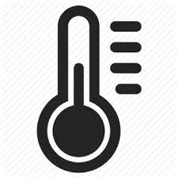
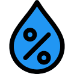
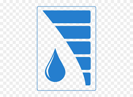
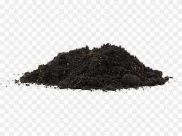

Sensor Data
| Sensor | Value | Units |
|---|---|---|
|

Temperature |
20 | °C |
|

Humidity |
39 | % |
|

Water Tank Level |
100 | % |
|

Soil Moisture |
0.8 |
Overview
Our smart farm uses a variety of sensors to monitor and optimize growing conditions for crops. The temperature sensor ensures that the temperature stays within the ideal range for plant growth, while the humidity sensor ensures that the air is not too dry or too damp. The water tank level sensor alerts us when it's time to refill the tank, and the soil moisture sensor ensures that the plants are not over- or under-watered.